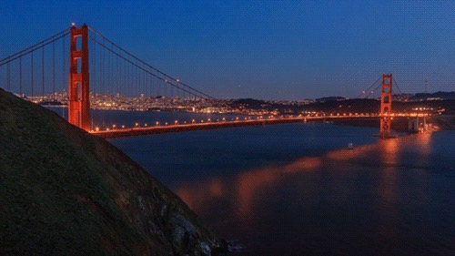
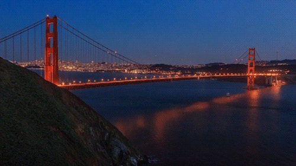

San Francisco, California
 

Geographical Location: North America
Photo Gallery

Alcatraz island


Florence


Geographical Location: Europe
Florence is located north of Rome and is the capital of Italy’s Tuscany region. One of its most iconic landmarks is the Duomo, a cathedral with a terracotta-tiled dome engineered by Brunelleschi. It is also home to the Uffizi gallery, which hosts Michelangelo’s famous “David” sculpture.
Florence is the capital city of the region of Tuscany in Central Italy. It is also the most populated city in Tuscany, with 360,930 inhabitants in 2023, and 984,991 in its metropolitan area. Florence was a centre of medieval European trade and finance and one of the wealthiest cities of that era It is considered by many academics to have been the birthplace of the Renaissance, becoming a major artistic, cultural, commercial, political, economic and financial center.
Photo Gallery


Yellowstone


Geographical Location: North America
Yellowstone is the first national park in the United States. It covers over 2.2 million acres, and provides an opportunity to see wildlife and explore geothermal areas. In fact, Yellowstone contains about half the world's active geysers.
These unique opportunities also bring out a lot of bad decisions among the tourists. Every year visitors injure themselves or the wildlife by getting close to the animals. You can see examples of people making bad decisions by visiting Yellowstone National Park: Invasion of the Idiots, Tourons of Yellowstone, or Cowboy State Daily.
Photo Gallery


Sofia, Bulgaria


Geographical location: Europe
Sofia is the capital city of Bulgaria, a country located in Eastern Europe. It is part of the European Union and the primary language spoken is Bulgarian. The city's population is around 1.3 million. In addition to its urban structures, Sofia also contains a mountain peak called “Vitosha”.
Vitosha is located 30 minutes from the capital's center, and can be reached by foot, car, and by lift. The peak has an elevation of 7,520 feet and during the summer months the average temperature is around 64 degrees fahrenheit. This makes it a great sight for any type of traveler who seeks the outdoors.
Photo Gallery